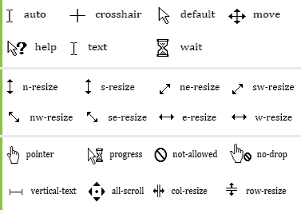

Float Property
Floating is used when there is a need for wrapping one element around another. It is often used for website layouts and is often applied to images as well. When an image is floated to the left, any text that appears after the floated image will appear to the right of that image. Similarly, an image floated to the right, will have any text that follows appear to the left of that image. Floating elements is a natural process when building a website's layout, and is the instinctive method for positioning elements on a page. Floats allow elements to appear next to, or apart from, one another. They provide the ability to build a natural flow within a layout and allow elements to interact with one another based on their size and the size of their containing parent.
.float div{
margin: 1.8%;
width: 29.6%;
float:left;
padding:1%;
border: 1px solid #fff;
}
Another Example
Box 1
Box 2
.float div1{
float:left;
padding: 15px 50px;
border: 1px solid #fff;
}
.float div2{
float:right;
padding: 15px 50px;
border: 1px solid #fff;
}
Background Property
{
background-image: url("./assets/images/tree.png");
background-repeat:no-repeat;
background-position: right center;
height:160px;
width:45%;
float:right;
}
You can set the following background properties of an element -
The background-color property is used to set the background color of an element.
The background-image property is used to set the background image of an element.
The background-repeat property is used to control the repetition of an image in the background.
The background-position property is used to control the position of an image in the background.
The background-attachment property is used to control the scrolling of an image in the background.
The background property is used as a shorthand to specify a number of other background properties.
Shorthand for Background
background: #000 url(tree.png) no-repeat left top;
Border Property
The CSS border properties allow you to specify the style, width, and color of an element's border.
border .dotted {border-style: dotted;}
border .dashed {border-style: dashed;}
border .solid {border-style: solid;}
border .double {border-style: double;}
border .groove {border-style: groove;}
border .ridge {border-style: ridge;}
border .inset {border-style: inset;}
border .outset {border-style: outset;}
border .none {border-style: none;}
border .hidden {border-style: hidden;}
border .mix {border-style: dotted dashed solid double;}
This property specifies what kind of border to display:
A dotted border.
A dashed border.
A solid border.
A double border.
A groove border.
A ridge border.
An inset border.
An outset border.
No border.
A hidden border.
A mixed border.
Color Property
CSS uses color values to specify a color. Typically, these are used to set a color either for the foreground of an element (i.e., its text) or else for the background of the element. They can also be used to affect the color of borders and other decorative effects.
NOTE: All the browsers does not support rgb() property of color so it is recommended not to use it.
Gradients displays the combination of two or more colors
The 17 standard colors are: aqua, black, blue, fuchsia, gray, grey, green, lime, maroon, navy, olive, purple, red, silver, teal, white, and yellow.
- RGB
- RGBA
- Hex
- HSL
- HSLA
- Opacity
{
background-color: rgb(0, 0, 0);
background-color: rgba(0, 0, 0,0.2);
background-color: #4d4d4d;
background-color: hsl(0, 0%, 0%);
background-color: hsla(0, 0%, 0%, 0.4);
background-color: rgb(0, 0, 0);
opacity: 0.2;
}
Css Fonts
The font-family property is used to change the face of a font.
The font-style property is used to make a font italic or oblique.
The font-variant property is used to create a small-caps effect.
The font-weight property is used to increase or decrease how bold or light a font appears.
The font-size property is used to increase or decrease the size of a font.
The font property is used as shorthand to specify a number of other font properties.
This is example where we used shorthand for font.
font-style: italic;
font-weight: bold;
font-size: 20px;
line-height: 1.2;
Use shortand
font-family: Arial, sans-serif;
font: italic bold 20px/1.2 Arial, sans-serif
This is a paragraph shown in Lato font.
.font-ex p{
font:italic small-caps bold 18px Lato;
text-align:center;
}
p.serif {
font-family: "Times New Roman", Times, serif;
font-variant: normal;
}
p.sansserif {
font-family: Helvetica, Arial, sans-serif;
}
p.monospace {
font-family: "Courier New", Courier, monospace;
font-variant: small-caps;
}
p.cursive {
font-family: Florence, cursive;
}
p.fantasy {
font-family: Blippo, fantasy;
}
This is a paragraph shown in serif font.
This is a paragraph shown in sans-serif font.
This is a paragraph shown in monospace font.
This is a paragraph shown in cursive font.
This is a paragraph shown in fantasy font.
CSS Dimension
The line-height property is used to set the line height of a between text.
The height property is used to set the height of a box.
The width property is used to set the width of a box.
The line-height property is used to set the height of a line of text.
The max-height property is used to set a maximum height that a box can be.
The min-height property is used to set the minimum height that a box can be.
The max-width property is used to set the maximum width that a box can be.
The min-width property is used to set the minimum width that a box can be.
Example of Dimensions.
{
width:auto;
height:auto;
border:1px solid #fff;
padding:5px;
margin:10px;
line-height:40px;
max-height:150px;
min-width:250px;
overflow: auto;
}
LIST
- The list-style-type allows you to control the shape or appearance of the marker.
- The list-style-position specifies whether a long point that wraps to a second line should align with the first line or start underneath the start of the marker.
- The list-style-image specifies an image for the marker rather than a bullet point or number.
- The list-style serves as shorthand for the preceding properties.
- The marker-offset specifies the distance between a marker and the text in the list.
{
list-style-type: square;
list-style-position: inside;
list-style-image: url('abc.png');
}
/*for shorthand*/
{
list-style: square inside url("abc.png");
}
- List 1
- 2
- 3
- one
- two
- three
- A
- a
- b
- c
- B
- C
Display Property
Inline elements:
respect left & right margins and padding, but not top & bottom cannot have a width and height set. allow other elements to sit to their left and right.
Block elements:
respect all of those force a line break after the block element
Inline-block elements:
allow other elements to sit to their left and right respect top & bottom margins and padding respect height and width
{
display: block/inline-block/inline;
}
-
Div-BlockBlock
- span inline span inline
- span inline block span inline block
Text
Text properties are as follow:
text-overflow
word-wrap
word-break
p.text-clip,
p.text-ellipsis,
p.normal,
p.text-wrap
{
width: 150px;
border: 1px solid #ccc;
}
p.normal{
white-space: nowrap;
}
p.text-clip {
text-overflow: clip;
white-space: nowrap;
overflow: hidden;
}
p.text-ellipsis {
text-overflow: ellipsis;
overflow: hidden;
white-space: nowrap;
}
p.text-wrap{
word-wrap: break-word;
word-break: break-all;
white-space: normal;
}
This paragraph contains
This paragraph contains
This paragraph contains
This paragraph contains
Position Property
Positioning elements appropriately on the web pages is a necessity for a good layout design. There are several methods in CSS that you can use for positioning elements.
Static Positioning
A static positioned element is always positioned according to the normal flow of the page. HTML elements are positioned static by default. Static positioned elements are not affected by the top, bottom, left, right, and z-index properties.
Relative Positioning
A relative positioned element is positioned relative to its normal position. In the relative positioning scheme the element's box position is calculated according to the normal flow. Then the box is shifted from this normal position according to the properties - top or bottom and/or left or right.
Absolute Positioning
An absolutely positioned element is positioned relative to the first parent element that has a position other than static. If no such element is found, it will be positioned on a page relative to the 'top-left' corner of the browser window. The box's offsets further can be specified using one or more of the properties top, right, bottom, and left.
Fixed Positioning
Fixed positioning is a subcategory of absolute positioning. The only difference is, a fixed positioned element is fixed with respect to the browser's viewport and does not move when scrolled.
-
Static
-
Relative
-
Absolute
-
Fixed
{
position: static;
border: 2px solid #fff;
left: 40px;
}
/* By default value is static. It can be fixed/absolute/reative as your requirement of an
element */
:Pseudo Class
The CSS pseudo-classes allow you to style the dynamic states of an element. For example, it can be used to:
Style an element when a user mouse's over it.
Style visited and unvisited links differently.
Style an element when it gets focus.
a:link {color: #000000} ;
a:visited {color: #006600} ;
a:hover {color: #FFCC00} ;
a:active {color: #FF00CC} ;
p:first-child { color: blue;}
::Pseudo Element
The CSS pseudo-elements allow you to style the elements or parts of the elements without adding any IDs or classes to them.
CSS3 introduced a new double-colon (::) syntax for pseudo-elements to distinguish between them and pseudo-classes.
The new syntax of the pseudo-element can be given with:
selector::pseudo-element { property: value; }
The ::first-line pseudo-element applies special style to the first line of a text.
p::first-line {
color: #ff0000;
font-variant: small-caps;
}
::after, ::before,::first-letter are the pseudo elements.
-
::First Line
Data -
::First Letter
Data -
::After
Data -
::Before
Data
Table Property
Tables are a way to represent complex information in a grid format.
Tables are made up of rows and columns.
Tables can be styled with CSS to add zebra striping or to highlight important rows/columns.
| Property | Description |
|---|---|
| border-collapse | Specifies whether table cell borders are connected or separated. |
| border-spacing | Sets the spacing between the borders of adjacent table cells. |
| caption-side | Specify the position of table's caption. |
| empty-cells | Show or hide borders and backgrounds of empty table cells. |
| table-layout | Specifies a table layout algorithm. |
The table-layout Property The table-layout specifies how the width of table columns is calculated. The possible values are: auto - when column or cell width are not explicitly set, the column width will be in proportion to the amount of content in the cells that make up the column fixed - when column or cell width are not explicitly set, the column width will not be affected by the amount of content in the cells that make up the column. The table layout is set to auto by default.
Example:-
The example below shows the difference between auto and fixed.Table-layout is set to auto
| 500.000.000.000.000 | 20.000 |
Table-layout is set to fixed
| 500.000.000.000.000 | 20.000 |
.table_ex {
border-collapse: separate;
width: 100%;
border: 1px solid gray;
}
td {
border: 1px solid gray;
}
table.auto {
table-layout: auto;
}
table.fixed {
table-layout: fixed;
}
table, th, td {
border: 1px solid black;
}
table {
border-collapse: collapse;
table-layout: fixed;
}
table, th, td {
border: 1px solid black;
}
th {
text-align: left;
}
td {
height: 50px;
vertical-align: bottom;
}
th, td {
padding: 15px;
text-align: left;
}
tr:hover {background-color: #f5f5f5;}
| No. | Name | |
|---|---|---|
| 1 | Varun | varun@gmail.com |
Table with Hidden Empty-cells
| Name | Varun |
|---|---|
Gradients
CSS3 gradients enable you to display smooth transitions between two or more specified colors. CSS3 defines two types of gradients: Linear and Radial.
To create a linear gradient, you must define at least two color stops. Color stops are the colors among which you want to render smooth transitions. You can also set a starting point and a direction - or an angle - along with the gradient effect.
In the example below, the colors blue and black are used to create a linear gradient from top to bottom.
To create a radial gradient, you must define at least two color stops.
The radial gradient is defined by its center.
The CSS syntax of the radial gradient looks like this:
background: radial-gradient(position, shape or size, color-stops);
In above example, we used radial gradient:-
background-image: radial-gradient(40% 70%,#009688 15%,#004B44 100%)
{
margin: 5%;
color: #fff;
background-image: linear-gradient(#009688, #004B44);
border: 1px solid #ccc;
}
Linear Gradient
Cursor
The cursor Property Values
There are numerous other possible values for the cursor property, such as:
default - default cursor, crosshair - cursor displays as crosshair, pointer - cursor displays hand icon
{
cursor: pointor;
}
{
cursor: text;
}
{
cursor: crosshair;
}
Rounded Corners
Border radius - allows us to create rounded corners for elements.
{
border-radius: 20px;
}
Box Shadow
Used to add shadow effects to elements,Following is the example to add shadow effects to element.
box-shadow: none|h-offset v-offset blur spread color |inset|initial|inherit;
{
width: 300px;
height: 100px;
padding: 15px;
background-color: rgba(0,0,0,0.5);
box-shadow: 2px 1px 15px #fff;
}
Text Shadow
CSS3 supported to add shadow effects to text. Following is the example to add shadow effects to text
{
text-shadow: 1px 1px 2px black, 0 0 25px blue, 0 0 5px darkblue;
}
Text Shadow
Multi Column
CSS3 supported multi columns to arrange the text as news paper structure.
{
/* Column count property */
-webkit-column-count: 4;
-moz-column-count: 4;
column-count: 4;
/* Column gap property */
-webkit-column-gap: 40px;
-moz-column-gap: 40px;
column-gap: 40px;
/* Column style property */
-webkit-column-rule-style: solid;
-moz-column-rule-style: solid;
column-rule-style: solid;
}
Transform Property
2D transforms are used to re-change the element structure as translate, rotate, scale, and skew
The 2D transformation methods are as follows: translate() rotate() scale() skewX() skewY() matrix()
{
width: 300px;
height: 100px;
background-color: #fafafa;
border: 1px solid black;
/* IE 9 */
-ms-transform: rotate(20deg);
/* Safari */
-webkit-transform: rotate(20deg);
/* Standard syntax */
transform: rotate(20deg);
}
.translate {
-ms-transform: translate(25px, 50px); /* IE 9 */
-webkit-transform: translate(25px, 50px); /* Safari */
transform: translate(25px, 50px);
}
.scale{
-ms-transform: scale(0.5, 0.5); /* IE 9 */
-webkit-transform: scale(0.5, 0.5); /* Safari */
transform: scale(0.5, 0.5);
}
.skewXaxis {
-ms-transform: skewX(10deg); /* IE 9 */
-webkit-transform: skewX(10deg); /* Safari */
transform: skewX(10deg);
}
.skewYaxis {
-ms-transform: skewY(10deg); /* IE 9 */
-webkit-transform: skewY(10deg); /* Safari */
transform: skewY(10deg);
}
.skew{
-ms-transform: skew(10deg, 10deg); /* IE 9 */
-webkit-transform: skew(10deg, 10deg); /* Safari */
transform: skew(10deg, 10deg);
}
.matrix{
-ms-transform: matrix(1, -0.3, 0, 1, 0, 0); /* IE 9 */
-webkit-transform: matrix(1, -0.3, 0, 1, 0, 0); /* Safari */
transform: matrix(1, -0.3, 0, 1, 0, 0);
}
/* above example of matrix:- matrix(scaleX(),skewY(),skewX(),scaleY(),translateX(),translateY()) */
Transition Property
A transition to take place, an element must have a change in state, and different styles must be identified for each state. The easiest way for determining styles for different states is by using the :hover, :focus, :active, and :target pseudo-classes. There are four transition related properties in total, including transition-property, transition-duration, transition-timing-function, and transition-delay.
| Property | Description |
|---|---|
| transition | A shorthand property for setting all the four individual transition properties in a single declaration. |
| transition-delay | Specifies when the transition will start. |
| transition-duration | Specifies the number of seconds or milliseconds a transition animation should take to complete. |
| transition-property | Specifies the names of the CSS properties to which a transition effect should be applied. |
| transition-timing-function | Specifies how the intermediate values of the CSS properties being affected by a transition will?be?calculated. |
Example
Box 1
.transition-ex .box {
background: #2db34a;
transition-property: background;
transition-duration: 1s;
transition-timing-function: linear;
cursor: pointer;
}
.transition-ex li.box:hover {
background: #ff7b29;
}
- Box
- Box 2
Box 2
.transition-ex .box2 {
background: #2db34a;
border-radius: 6px;
transition-property: background, border-radius;
transition-duration: 1s;
transition-timing-function: linear;
cursor: pointer;
}
.transition-ex li.box2:hover {
background: #ff7b29;
border-radius: 50%;
}
Animation
Transitions do a great job of building out visual interactions from one state to another, and are perfect for these kinds of single state changes. However, when more control is required, transitions need to have multiple states. In return, this is where animations pick up where transitions leave off.
Animations Keyframes
To set multiple points at which an element should undergo a transition, use the @keyframes rule. The @keyframes rule includes the animation name, any animation breakpoints, and the properties intended to be animated.
Animation Name
Once the keyframes for an animation have been declared they need to be assigned to an element.To do so, the animation-name property is used with the animation name, identified from the @keyframes rule, as the property value.
Animations Duration, Timing Function, & Delay
Once you have declared the animation-name property on an element, animations behave similarly to transitions.They include a duration, timing function, and delay if desired. To start, animations need a duration declared using the animation-duration property.
A timing function and delay can be declared using the animation-timing-function and animation-delay properties respectively.
.animation-ex .stage {
border:2px solid #fff;
height: 180px;
position: relative;
width: 500px;
}
.animation-ex .ball {
background: #2db34a;
border-radius: 50%;
height: 50px;
position: absolute;
width: 50px;
cursor: pointer;
}
.animation-ex .stage:hover .ball {
animation-name: slide;
animation-duration: 2s;
animation-timing-function: ease-in-out;
animation-delay: .5s;
}
@keyframes slide {
0% {
left: 0;
top: 0;
}
50% {
left: 244px;
top: 100px;
}
100% {
left: 388px;
top: 0;
}
}
Customize Animation Example
Animation Iteration
By default, animations run their cycle once from beginning to end and then stop. To have an animation repeat itself numerous times the animation-iteration-count property may be used. Values for the animation-iteration-count property include either an integer or the infinite keyword.
Animation Direction
On top of being able to set the number of times an animation repeats, you may also declare the direction an animation completes using the animation-direction property. Values for the animation-direction property include normal, reverse, alternate, and alternate-reverse.
Animation Play State
The animation-play-state property allows an animation to be played or paused using the running and paused keyword values respectively. When you play a paused animation, it will resume running from its current state rather than starting from the very beginning again.
Animation Fill Mode
The animation-fill-mode property identifies how an element should be styled either before, after, or before and after an animation is run. The animation-fill-mode property accepts four keyword values, including none, forwards, backwards, and both.
.animation-ex .element i{position:absolute; top:30%; left:35%;}
.animation-ex .element{
height: 150px;
width: 150px;
margin: 0 auto;
position:relative;
background-color: red;
animation-name: stretch;
animation-duration: 1.5s;
animation-timing-function: ease-out;
animation-delay: 0;
animation-direction: alternate;
animation-iteration-count: infinite;
animation-fill-mode: none;
animation-play-state: running;
}
@keyframes stretch {
0% {
transform: scale(.3);
background-color: red;
border-radius: 100%;
}
50% {
background-color: orange;
}
100% {
transform: scale(1.0);
background-color: yellow;
}
}